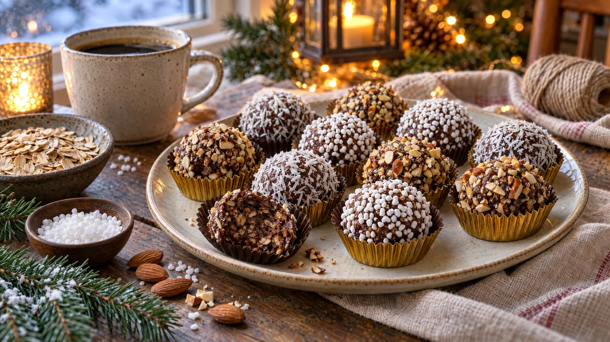

RESTFEST · RECEPTFika & bakning
Chokladbollar i tre dräkter med kokos, pärlsocker och rostad mandel
Havregryn, kakao, smör och en skvätt av morgonens kaffe. Barnens favoritfika rullas till perfekt runda kulor och klär sig i tre olika dräkter: snövit kokos, glittrande pärlsocker och gyllene rostad mandel. I små pappersformar, uppradade i en ask, ser de ut som pralinerna i en chokladbutik.
- Förberedelse
- 20 min + 30 min i kylen
- Tillagning
- 5 min
- Portioner
- ca 20 st
- Nivå
- Nybörjare
 Det här behöver du
Det här behöver du
Tryck på + vid det du behöver köpa.
Chokladbollar
Tre dräkter
Gör så här
- Rör smör, socker och vaniljsocker poröst med en slev eller elvisp.
- Tillsätt kakao, havregryn, kaffe och salt och rör tills allt är jämnt blandat.
- Ställ smeten i kylen i 15–20 minuter, så blir den lättare att rulla.
- Rosta mandlarna i en torr stekpanna på medelvärme i 3–4 minuter, tills de doftar. Låt dem svalna och hacka dem fint. Lägg kokos, pärlsocker och mandel på var sin flat tallrik.
- Rulla smeten till jämna bollar, ca 3 cm. Använd en matsked som mått, så blir alla lika stora. Kalla, lätt fuktade händer ger en slätare yta.
- Rulla en tredjedel av bollarna i kokos, en tredjedel i pärlsocker och resten i mandel. Tryck lätt så att dräkten fastnar.
- Ställ bollarna i kylen i minst 30 minuter, tills de är fasta.
Dekoration och servering
- Lägg varje boll i en liten pappersform, gärna i guld, brunt eller naturfärgat papper.
- Varva de tre sorterna i rader på ett fat eller i en ask, som praliner.
- Packa dem i en låda med silkespapper och ett snöre, så blir de en fin present.
- Förvara dem i kylen, där håller de i ca 1 vecka. De är godast när de fått stå framme i 10 minuter.
- Byt smöret mot växtbaserat margarin för en vegansk variant.
Mått och ugnstemperaturer
Måtten är svenska (dl, msk, tsk, krm). Ugnstemperaturerna gäller vanlig ugn med över- och undervärme; med varmluft, sänk med 20 grader.